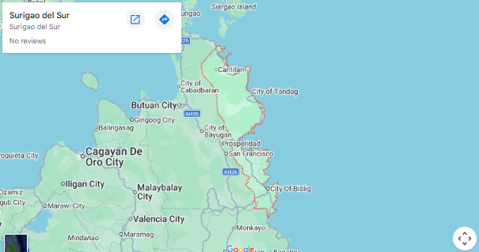

HISTORY
Old folks still like to recount how some Visayan fishermen, forced by strong currents in what is now Surigao Strait, sought refuge in one of the huts somewhere in the province. The locals or Mamanwas thought the fishermen wanted to take the hut by force or by "agaw". This term was given the prefix "suri" and "Suriagaw" was formed. In time, it was shortened to Surigao.
Still another version recounts that, before the Spaniards came, the original inhabitants were the Mamanwas and Manobos. The Visayans then came and settled on the island with the natives. One of the natives was Saliagao, who lived by the mouth of the river. From his name came "Surigao"
But no matter how Surigao got its name, it is a fact that Surigao del Sur being a marvel in terms of natural resources, is already an indispensable part of the Philippine Map.
Surigao del Sur was created as the 56th independent Philippine province on June 19, 1960 by virtue of House Bill No.3058 also knwon as the Republic Act No. 2786 authored by then Representative Reynaldo P. Honrado. It was formally created and inaugurated on September 18, 1960 at the capital town of Tandag, the seat of the Provincial government. Its first appointed and elected Governor was the late Recaredo B. Castillo, followed by the late Gov. Adela Serra Ty.
GEOGRAPHY
Surigao del Sur is naturally advantaged. It is located in the northeastern coast of Mindanao facing the Pacific Ocean. It is approximately 300 kilometers in the length and 50 kilometers at its widest stretch.
It is bounded on the Northwest by the Province of Surigao del Norte; on the Southeast by Davao Oriental; on the East by the Pacific Ocean; and on the West and Southwest by the provinces of Agusan del Norte and Agusan del Sur. The Diwata Mountain Range lines the northwestern boundaries of the province.
Surigao del Sur is a province of the infant CARAGA REGION.
PROVINCE PROFILE
- Capital: Tandag City
- Land Area: 523,050 Hectares
- Population: 592,250 (2015 Census)
- Population Destiny: 120 person/km2
- Literacy Rate: 94% Growth Rate: 1.03
- Language and Dialects: English, Cebuano, Surigaonon, Kamayo
- Income Class: 1st Class
PROVINCIAL DELINEATION
- Number of Municipalities: 17 mostly located along the coastal areas
- Number of Cities: 2
- Number of Barangays: 309
- Congressional District: 2

POLITICAL SUBDIVISION
Municipalities are grouped into 3 clusters based on their common resource potentials: the BIBAHILITA (Bislig, Barobo, Hinatuan, Lingig and Tagbina), the MACASALTABAYAMI (Marihatag, Cagwait, San Agustin, Lianga, Tago, Bayabas, and San Miguel) and CARCANMADCANCORTAN (Carrascal, Cantilan, Madrid, Carmen, Lanuza, Cortes, Tandag).
SURIGAO DEL SUR TOURISM CIRCUIT
CIRCUIT NO. 1: CARRASCAL → CANTILAN → MADRID → CARMEN → LANUZA
CIRCUIT NO. 2: CORTES → TANDAG CITY → TAGO → BAYABAS → CAGWAIT → SAN MIGUEL
CIRCUIT NO. 3: LIANGA → BAROBO → SAN AGUSTINE → MARIHATAG
CIRCUIT NO. 4: TAGBINA → HINATUAN → BISLIG CITY → LINGIG
CLIMATE
The Province falls under the type II of climate in the Philippines characterized by rainfall that is distributed throughout the year. September is the driest month, while January is the wettest.
BY LAND
Philtranco and PP Bus Line ply the route of Tandag- Manila several times a week. Bachelor Express have daily trips from Tandag to Davao City, Butuan City and Surigao City every hour on the hour.
There are also vans-for-hire, within Tandag City, commuting is through tricycle and "tri-sikad"